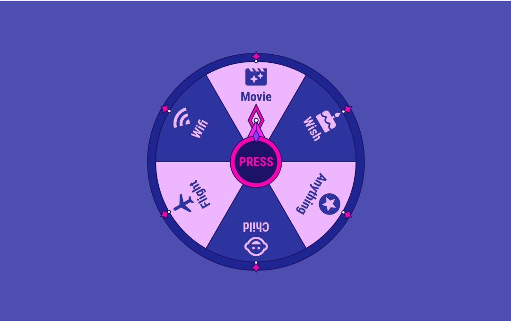
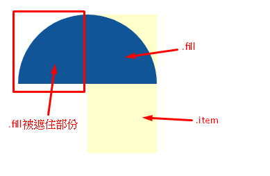
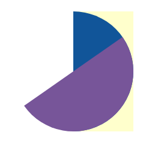

JS地下城：9F-抽獎轉盤

規則
【特定技術】2017 遊戲輪盤規則
輪盤只能轉 20 次，人人有獎
Flight：1 份
Child：4 份
Anything：5 份
Wifi：5 份
Wish：5 份
已經被抽到的獎項，就不可再次出現【特定技術】2018 遊戲輪盤規則
編號 20：69 份
編號 19：20 份
編號 18：10 份
編號 17：5 份
編號 16~2：各編號皆 1 份
編號 1：1 份請移除獎品名稱與 icon，僅單純顯示編號
已經被抽到的獎項，就不可再次出現【特定技術】以上兩個遊戲轉盤，不可直接寫死樣式在網頁上，請將品項以「JSON」格式來儲存，再藉由 JS 跑迴圈依序顯示獎項在輪盤上，此舉用意為若日後輪盤會新增獎項時，只要在 JSON 格式上新增即可。
【特定技術】點選中間的「PRESS」後，指針開始滾動，滾動到一定時間後，就會停止並指向到獎項上。
【特定技術】請考量中獎機率，以 2018 來說，總計有 120 份獎品，所以編號 1 的獎品第一次抽中機率是 1/120，而隨著品項變少也會跟著重新計算中獎率。
使用 vue 挑戰此次的關卡
此次的關卡 需要大量計算圓形角度
利用這些角度 再去繪製出輪盤的圓餅圖
這次依然選用 css 去繪製(跟它比較熟 XDD
在計算方式上，沒有用到很複雜的公式
前置
- 請考量中獎機率，以 2018 來說，總計有 120 份獎品，所以編號 1 的獎品第一次抽中機率是 1/120，
- 而隨著品項變少也會跟著重新計算中獎率。
在中獎機率上，我把所有的獎項依照他的份數去分配比例，份數多面積佔的大，反之份數少則面積小
被抽中後的獎項會 -1 後 會再次調整每個獎項的圓餅圖大小
- 因應色系的底色 必需要有顏色交錯呈現 (一藍一灰(?)
代表上面的獎項需為雙數，但在這之前 獎項若被抽光了 其品項就會有單數的機率
所以我這裡調整為
若是當下被抽掉的項目 獎項會變成單數時，就暫時不要抽掉 (若剛好轉到的獎項是 0 時 就會再重轉一次)等下一個獎項被抽光 變雙數時 再一起抽掉 直到最後兩個 被抽光的時後 就會跳出 獎項全被抽光的 alert
這裡的命名我會與我的 sourse code 取名一樣，在看的時後會比較好對照
css 圓餅圖

如圖 淺黃色 `item` 部份 可以將他視為遮罩 藍色`fill` 則是主要顯示區域，紅色框框就是被遮住的部份 然後中心點設計在藍色半圓形的中間，層層堆疊後，這樣就能畫出每個獎項所要的範圍1 | <div class="item"> |
1 | .item { |
在 transform: rotate(0deg) 的時後 圓餅所呈現的是 90 度，所以我們必需將它 減 -90 度 transform: rotate(-90deg) 才會是圓餅圖範圍的起始點
但!! 人生就是有這個 but!! 這樣的圓餅圖最多只能畫到 180 度 那若是其中一種獎項的份數太多超過 180 度 多出的角度就會空出一塊!!!
我這裡處理的方式是 再多畫一塊 fill，命名為 fill2 (超沒創意 XD) 去補足另一塊所缺的角度
例 有一塊的角度 算出來是 235 度，那就是 235-180 = 55 那多出的那一塊就是畫 55 度去補上
要注意的是 因為補上的這一塊是另一半的圓，所以這個半圓的啟起點要從 180 度下去計算 transform: rotate(90deg) 才會是多出來的這一塊半圓的起始點 然後記得 這要把這個 item 的 overflow:hidden 打開 多出的那一塊才會看的見 如下圖

這裡看到我畫出來的樣子：
用程式畫大餅
基本的圖形畫完後，接著就可以讓程式把大餅畫出來啦～
2017 年獎項 ( 因為題目上似乎有 bug 圖上的顯示有 6 款品項，而列出來的只有 5 項，所以在份數這方面我就另外自訂啦～
Flight：1 份
Wish：5 份
Anything：3 份
Wifi：4 份
Child：2 份
Movie : 5 份
合計共 20 份
360 / 20 = 18
每份所分得的角度是 18 度 然後再用這角度分別 算出每個獎項所需要的角度
json 列表設計
1 | "item": { |
取出物件名稱
1 | getItem(){ |
可用 Object.keys 取 或 for-in
MDN-Object.keys()
算出每個獎項的角度
1 |
|
- 註：在陣列累加這部份有稍微小小卡了一下，一直在思考要怎麼寫出來，後來鎖性一個一個寫出來出來 列到最後 看出它的規律 再用迴圈跑
大餅畫好後 就是把指針放上去轉 指到哪個 哪個就中獎
所以一樣也是 css 找出中心點 把指針位置放上去
這裡就不多說了
轉出得獎品
先前我們已經利用 angleAccu 取得每塊大餅的位置
我們就可以用這個角度去取得中獎品項
1 | press(){ |
處理到這 大致上也完成的差不多啦，剩下的就是一些細節的調整
是說調細節也是需要花很多時間去處理，再來就自行發揮囉～
以上是個人絞盡腦汁後所想到的處理方式了
若是看到我以上的處理方式有更好的建議也歡迎分享一起討論^_^
後記
這次要算的數學好多啊…..常常算到一半時 腦袋就亂掉 思緒中斷後 又要重來
所以花了很多時間去處理數字這部份
不過看到完成後的成果 還是很開心的啦